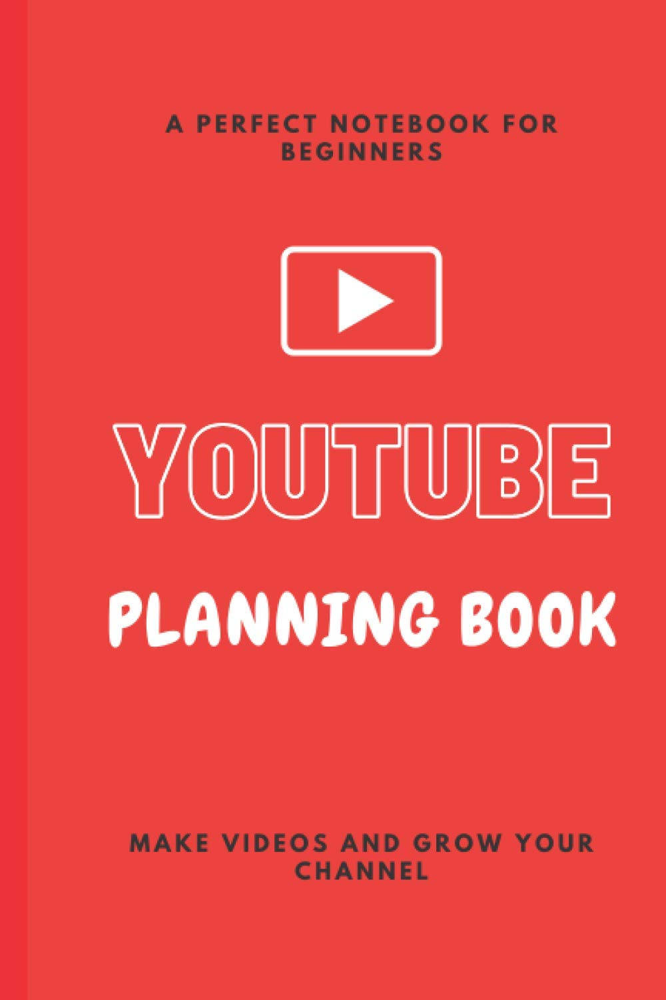
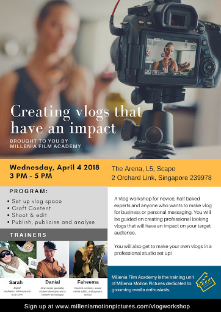
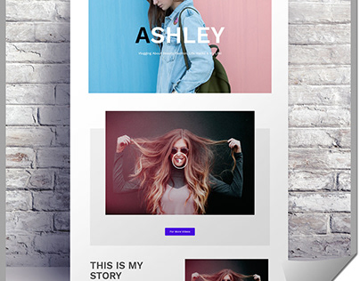

A video blog, also known as a video log, is a type of blog in which most or all of the material is in video format. Vlog posts include making a video of yourself talking about a specific subject. It can also be used to share your creative process or as a tutorial guide. Video streamers or Youtubers who don't use a blog but post regularly are referred to as vloggers. Vlog posts include making a video of yourself talking about a specific subject, such as reporting on or reviewing a product or an event. It can also be used to share your creative process or as a tutorial guide for a specific creative activity or subject. Some vloggers also use it to showcase their own original performance art or music.

Research is key for being successful in your field of choice. Start by analyzing the vloggers you like. Pay attention to the small details to get an important insight into the world of vlogging. The beauty of YouTube is that it allows you to showcase your originality and peculiar interests. Create your own vlogging style so you can stand out among other YouTubers in a similar niche. The ultimate guide to YouTube vlogs.
To start creating your YouTube vlogging channel head on over to https://www.youtube.com/create_channel. If you don’t have a Google Account yet, you will need to create one in order to proceed.
Since vlogging is a mix of spontaneity and everyday activities, you can simply begin vlogging your days as they unfold while continuing to do your regular daily activities such as cooking, getting ready, exercising, and so on. Then, as time passes and you gain more subscribers, you will start incorporating new fun things into your vlogs.
You should also consider the frequency of your uploads. Do you want to vlog and post every day (which can be time-consuming), or do you want to vlog a few times a week and then compile the clips into one weekly vlog? It's crucial to be consistent and upload on a regular basis, whether it's daily, weekly, or every two weeks.
The first step is to visualize the sort of viewers you want to draw in your mind. When starting any form of company, including vlogging, it's crucial to know who your target audience is and what they like and dislike. Since this is such a broad subject, read this article to learn how to find the right YouTube audience for your channel.

To begin vlogging, you do not need to spend hundreds or thousands of dollars on expensive equipment, but a good camera is required. A flip screen is a useful feature that allows you to see yourself while filming, which is useful for ensuring you're in the right frame and focus. It is just a matter of trying and looking for a enough equipment that you think will suit as starters.
Another significant consideration is sound quality; however, if you don't have the funds to invest in a high-end microphone, you can find some low-cost alternatives, such as the Samson Go Mic.Another choice is to use your phone or borrow a nice camera from someone you know in the early stages of your YouTube channel.
As you go along, you must also start investing on the high-end equipment for better and convenient vlogging. You can also invest in additional equipment such as a nice camera (like the Canon m50), a high-quality microphone, a tripod, a wind muffler, or artificial lighting if you have enough money.
This step entails brainstorming ideas for what you want to film. Making a content plan, at least for the first month, will relieve stress and allow you to film videos more easily. According to vlogging pro website, it’s always better to make impromptu, natural vlogs and play it by ear, and then use your editing skills to make it as you envisioned it to be. However, speaking naturally and being spontaneous in front of a camera can be a struggle for many in the beginning, so we advise you to create reminders or scripts about your first few videos and take it from there.
Vloggers need to have a content plan for at least the first month of filming. Come up with a couple different video ideas and write everything down. It's always better to make impromptu, natural vlogs and play it by ear, and then use your editing skills to make it as you envisioned it to be. We advise you to create reminders or scripts about your first few videos and take it from there.
Stay calm and don't overplan your first vlog. Vlogging allows you to connect with your audience on a more personal level. Create a preview for your video by creating a funny scene or showing a preview. Sign off with a unique personal phrase or gesture to personalize your videos and make them memorable.
You can either choose a still frame from your vlog after uploading the video or create a custom thumbnail. All thumbnails must follow YouTube's guidelines or YouTube will disable the custom thumbnail function. Try to write a description of 300 to 500 words and include some keywords (but don't go overboard) This helps YouTube understand your video better and recommend it to the right audience. The final part of your video listing is your video description. You can make a silly face to convey your video's subject by making a scary face and putting it as a thumbnail.
Every minute, over 300 hours of video are uploaded to YouTube. If you want to get views you'll need to effectively promote your vlogs. The easiest way to promote your new vlog is by promoting it on your own social media. Always be transparent with your audience and create the kind of content you'd like to see. Make sure you create a schedule for yourself and stick to it.Collaborate with other YouTubers and brands. Build a community by engaging with your community on social media as well.
You can also collaborate with other vloggers to cross-promote each other, but this is only effective if you have at least a few thousand subscribers. Always take advantage of opportunities to promote your vlogs with other youtubers by collaborating with them. It will also help you to promote your channel when it is promoted by other youtubers.
Once your subscriber base grows and you start getting more views, it’s time to make some money off of your vlogs.Apply to the Youtube Partnership Program so you can start earning money from ads shown before or during your videos.To become a partner you need to meet two requirements:
Have more than 4,000 public watch hours in the last 12 months.
Have more than 1,000 subscribers.
Beware: YouTube does not let you monetize videos with copyrighted material so don’t include any songs you don’t own the rights to.
Amazon or similar websites, such as LinkShare.com, may provide affiliate links. Affiliate marketing is a fantastic way to profit from your videos. It's simple to incorporate, for example, whether you're reviewing a product or mentioning one in your video.

To begin, it is important to note that in order to progress in vlogging, you must understand how to connect with your audience. Draw in with them as well as make content with the correct tone to interface with them stunningly better. This is because a video blog is essentially a medium through which you can establish a pleasant relationship with your viewers.
Maintain consistency in your uploads. YouTube rewards channels that post videos on a regular basis by ranking them higher in the search results. Continue to network with other YouTubers, bloggers, and social media users. Never give up! Every vlogger who now has millions of subscribers began at the bottom. Continue to improve your vlogging and editing skills. You never know when you'll get your big break. The more you upload, the bigger the chances of your potential viewers finding your channel.
Those individuals who can make progress on YouTube are the individuals who can bounce onto the most recent patterns. So you should watch out for the forthcoming patterns and guarantee that you use them for your potential benefit for progress on YouTube.
Those individuals who can make progress on YouTube are the individuals who can bounce onto the most recent patterns. So you should watch out for the forthcoming patterns and guarantee that you use them for your potential benefit for progress on YouTube.
This is yet another important tip that successful vloggers have used. To put it another way, there are many tasks involved in channel enhancement. The most important factor is the number of recordings you upload to your channel. When it comes to upgrading your channel, the size of the substance of your divert is crucial. Another way to streamline your channel is to make sure you pass recordings regularly.
Videos with a high level of interaction perform better. Always consider to make a concerted effort to build your thumbnails.Viewers also want to see a vlog that is not too long to watch, so it would be better to keep your videos short. Upon asking the viewers to hit that like and subscribe button as well as the notification bell, you must also find time to engage at the comment section. Viewers suggestion is really a big factor for you to improve, also provide a lot of content recommendations.
Finally, if you want to be effective at vlogging on YouTube, you must prioritize both quality and frequency of uploads. The majority of YouTube users prefer people who are involved and post high-quality content. By regularly uploading high-quality content, you can attract a large number of subscribers to your channel.
If you like what you're vlogging about, it'll become a regular part of your day. You can tell that a lot of vloggers enjoy what they do. Vlogging seems to be a part of their everyday routine. Imagine being able to do what you love while still being able to explore and travel, entertain others, become influencers, and earn more than enough. In terms of filming, you no longer need to appear on national television to make money and become a public figure, now you can whoever you want facing the camera you're holding on.
You would almost certainly meet new people if you post to YouTube on a regular basis. You'll be able to make new friends who share your interests. Returning to the kayaking example, if you vlog about kayaking on a regular basis, other kayakers can view your videos. Then, if they live near you or learn that you'll be in their city, they might contact you. If you let it, vlogging can become very interactive.
One of the most difficult things for new vloggers or YouTubers is creating enough content to really create an audience. If you don't see the results you expect after a few weeks, it's easy to give up. In most cases, regular vlogging will get you there quicker. You'll have 365 videos in a year if you have positive content to share and you do it every day.
You can save those every moments you treasured by vlogging. It's like when you record a special occasion on your phone and then go back to it whenever your want. Today, you can easily save the video for later viewing and capture all of life's special moments in your vlog. If you intend to show off your everyday life, particularly if you have children, this could be a huge plus.
One of the greatest advantages of regular vlogging is how much better at capturing and editing videos you can become. Repetition and repetition will help you improve, and doing so on a regular basis will help you get there quicker.
People would expect a great video from you any time you upload if you've gained popularity. You've been chastised for a single blunder in a video.
Every day, you must set aside time to shoot, edit, publish, and upload your vlog. It can quickly consume your time, and you can feel as though you don't have enough time to complete anything.There are ways to combat this, and I prefer to take 3 to 5 videos in one session and edit them all at the same time.
When you have a family, YouTube channels also turn into regular videos, just with your family. If you decide that YouTube is more valuable than your family, then nothing is private. Your children will be online, which could be a big change for them. Not everybody enjoys having their lives broadcasted to the rest of the world.
On YouTube, there is a lot of hatred. People make derogatory remarks about you in the comments section for no reason other than to drag you down. Others are mean, and they refuse to consider things that are different or strange to them. Family, colleagues, and even strangers would most certainly condemn you. It can happen to your face and behind your back, in addition to the comments section.
You must maintain a high level of secrecy regarding your residence. Your address or city can be revealed by a single detail. You will be harassed by a horde of adoring fans. This isn't the first time it's happened. They record clips or pretty much all from the day, maybe even a live stream, and then edit it down later. This means you will have to shoot outside or in public, which can be nerve-wracking for others.
2021 * 3-minute read
Vlogging can be a great way to engage with your online audience and find new followers, and if you aren’t a fan of writing it can be an alternative way ...
2021 * 6-minute read
If I told you that you could become a sucessful YouTuber/vlogger, would you believe me?...
2020 * 10-minute read
Learn ways to master the craft of vlogging.....
Video Courtesy: Mike Chudley
https://www.youtube.com/watch?v=aUIXtRexdUU&t=2s
We create this content for general information purposes and all the information is base on our understanding and researches and it should not taken as advice. Always take professional advice.
Disclaimer: Note that we do not own the images and videos used in this website. All rights and credit goes directly to its rightful owners. This website is non-profit and made for educational purposes only. No copyright infringement intended.
"Copyright Disclaimer, Under Section 107 of the Copyright Act 1976, allowance is made for "fair use" for purposes such as criticism, comment, news reporting, teaching, scholarship, and research. Fair use is a use permitted by copyright statute that might
otherwise be infringing. Non-profit, educational or personal use tips the balance in favor of fair use"